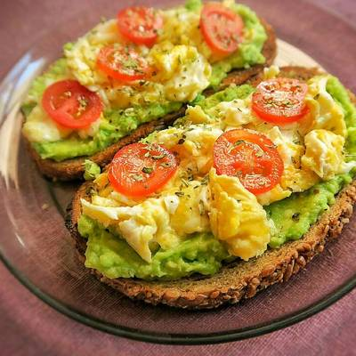

Tostadas de Aguacate y Huevo
Deléitate con estas tostadas de aguacate y huevo, una combinación irresistible de sabores y texturas. El aguacate cremoso se mezcla con la yema líquida y la clara cocida del huevo para un desayuno nutritivo y delicioso.

Ingredientes:
4 tortillas de maíz o tostadas de tu elección
2 aguacates maduros
4 huevos
1 tomate mediano, picado
1/4 de cebolla roja, picada finamente
1 diente de ajo, picado
1 cucharada de jugo de limón
Sal y pimienta al gusto
Aceite de oliva o mantequilla para cocinar los huevos
Cilantro fresco picado para decorar (opcional)
Pasos:
1.En un tazón, aplasta los aguacates maduros con un tenedor hasta obtener un puré suave. Agrega el jugo de limón, sal y pimienta al gusto. Mezcla bien y reserva.
2.En una sartén grande, calienta un poco de aceite de oliva o mantequilla a fuego medio. Agrega la cebolla picada y el ajo picado, y saltea hasta que estén dorados y fragantes.
3.Agrega los huevos a la sartén y cocínalos a tu gusto (puedes hacerlos fritos, revueltos o en forma de tortilla).
4.Mientras se cocinan los huevos, calienta las tortillas de maíz en otra sartén o en el horno.
5.Para armar las tostadas, coloca una porción de puré de aguacate en cada tortilla caliente.
6.Coloca encima los huevos cocidos y esparce el tomate picado sobre ellos.
7.Decora las tostadas con cilantro fresco picado si lo deseas.